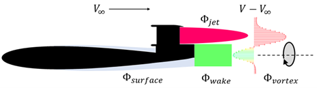

-
予冷ターボジェットエンジンとは
佐藤研究室の主な研究対象である予冷ターボジェットエンジンとは，ジェットエンジンにおけるインテークと圧縮機の間に熱交換器(予冷器)を置き、圧縮機に流入する空気をあらかじめ冷やす極超音速機用ジェットエンジンです。
高マッハ数での飛行ではインテークにおいて流入する空気の速度が減速され、運動エネルギが熱エネルギに変換されるため、インテーク後の温度が非常に高くなります(大気温度と比べてマッハ5で1000度以上高くなる)。さらに圧縮機で空気が圧縮されることで、その温度はより高くなります。
このままでは圧縮機の翼が溶けてしまうので、予冷器を設置して空気を冷やすことにより高いマッハ数でも作動可能にしようということが、このエンジンの狙いです。

予冷ターボジェット（Sエンジン） (JAXA提供)
-
HIMICO計画
JAXAや他大学と共同で極超音速旅客機の実用化に向けてHIMICO(High Mach Integrated Control
Experiment,極超音速統合制御実験)計画が進められています。HIMICO計画とは運用方法が確立されているS-520観測ロケットにHIMICO実験機を搭載してJAXA
内之浦宇空間観測所より打ち上げる飛行実験です。主な目的は以下の２つです。
- 極超音速飛行環境下での機体とエンジンの統合制御技術の実証
- 短期間かつ低コストに再現できる極超音速飛行実験の確立
佐藤研究室では実験機に搭載されるラムジェットエンジンについて研究しています。

極超音速統合制御実験機
-
空気取込口(エアインテーク)
ラムジェットエンジンは圧縮機を持たず、エアインテークで流入する空気の運動量を衝撃波により、圧力に変換しています。エアインエークの性能はエンジンに流入する空気流に
影響し、エンジン全体の性能に関わるため、詳細な調査が必要です。 JAXA 相模原キャン
パスの超音速風洞や JAXA
調布キャンパスの極超音速風洞を用いて風洞試験を行い、エンジンの性能取得、衝撃波の撮影（シュリーレン）、バズ特性やオイルフローを用いた流れ場の調査を行っています。
-
CFDによる詳細解析
JAXAが開発した高速流体ソルバ「FaSTAR」を用いて、実験では見ることのできないエアインテーク内部の流れ場やバズ特性に関して数値解析を行っています。

計算格子（静粛超音速機）

（左）HIMICOの数値解析結果 （右）静粛超音速機の数値解析結果 （ともにMach数分布）
予冷ターボジェットエンジンには燃料の液体水素（LH2）を用いて、流入空気を冷却する空気予冷器が搭載されます。
空気予冷器を搭載することで、熱負荷の低減や中間冷却効果によるサイクル性能の向上が見込まれます。
しかし、低マッハ領域で伝熱管表面に着霜し、熱交換量の低下や流路閉塞などの問題が生じます。
そこで、予冷却班では以下の2つのテーマに取り組んでいます。
-
エアロゾル(小さい粒子)を用いた着霜抑制
空気予冷器の伝熱管表面で空気中の水分が凝結することによる着霜は、 圧力損失や流路閉塞などにつながり、大きな課題となっています。
そこで空気中にエアロゾルを流すことで空気中の水蒸気がミストになることを促進し、霜がつく量を抑制することを目指しています。ミスト化を促進することで後方に水蒸気が飛んでいき着霜量が減るというメカニズムです。
-
極低温伝熱面上での着霜現象の数理モデル化
着霜現象を数理モデル化することで、実験では計測が困難な現象の解明や、着霜予測の実現を目指しています。
佐藤研究室では、特に極低温伝熱面上での着霜現象に着目した数理モデル化に取り組んでいます。
極低温伝熱面上では、霜の形成と水蒸気のミスト化（微小な液滴や氷粒子となる現象）が同時に発生し、非常に複雑な現象となります。
従来の水蒸気と霜だけを考慮したモデルではなく、ミストの生成や堆積の影響も考慮した新しい数理モデルの研究に取り組んでいます

着霜現象のモデリング
予冷ターボジェットエンジンの燃料には液体水素（LH2）が使用されます。
液体水素は沸点がおよそ-253°C（20K）の「極低温流体」であるため、配管内で容易に沸騰し、気相と液相が共存する「気液二相状態」に遷移します。
配管内が気液二相状態になると、流量の高精度な制御が困難となることが、エンジン運用上の課題となっています。
そこで二相流班では、気液二相流現象の流動特性の把握と現象解明のため、以下の3つのテーマに取り組んでいます。
-
ボイド率計測技術の開発
「ボイド率」とは気液二相流中における、気相の体積割合のことです。このボイド率は気液二相流の流動特性を決定づける主要なパラメータであるため、ボイド率の計測技術は重要となります。そこで、二相流班では極低温でのボイド率の計測技術の開発に取り組んでいます。開発中の「静電容量型ボイド率計」は配管内の静電容量を計測し、それをボイド率に変換することでボイド率を計測しています。さらに、このボイド率計には小型で堅牢であるという特徴があり、航空宇宙機に実機搭載してのリアルタイム計測ができることを目標にしています。また、ボイド率計を用いた極低温下におけるキャビテーションの体積計測のほか、冷凍空調機における冷媒流のボイド率計測技術の開発などにも挑戦しています。現在は、金属のみでパーツを構成することで高圧下での強度の信頼性向上を図ったボイド率計や、局所での測定が可能な探針式のボイド率計の開発を行っています。
設計中の静電容量型ボイド率計(左) 静電容量型ボイド率計の電場解析(右)
-
機械学習を用いた二相流現象の解明に関する研究
気液二相流は、液体水素を用いる航空宇宙エンジンに加え、各種発電プラントや流体機械など、多くの分野で重要な役割を持つ現象です。
それにも関わらず、時間的・空間的に複雑な変動を伴う現象であるため、その理論化が困難な現状にあります。
そこで二相流班では、従来のような理論的・演繹的アプローチではなく、データドリブンな機械学習を用いた帰納的アプローチによって、気液二相流現象の解明を試みています。
現在は「深層学習を用いた気液二相流の流動様式判別」「深層学習を用いた流動様式線図作成」などのテーマに取り組んでいます。

上昇流における気泡挙動の実験観察例
-
BLIについて
航空機需要はコロナ禍による一時的な落ち込みがあったものの順調に回復の道を辿っており、以前の増加トレンドにしたがって再拡大が見込まれています。
一方で、世界的に環境保全意識が高まっており、航空機の燃費性能向上などを掲げ、様々な研究がおこなわれてきています。BLIはそのうちの1つです。Boundary Layer
Ingestionの頭文字をとってBLIと表記しますが、日本語では境界層吸い込みと呼ばれます。
飛行中の航空機の表面には、低速の気流層が形成されており、これを境界層(Boundary
Layer)と称します。通常の航空機は、機体とエンジンが分離していることによって境界層を吸い込まないようになっていますが、BLIを適用する航空機では、機体にエンジンを埋め込むことなどによって、この境界層をエンジンに吸い込ませるように設計します。BLIによって飛行時に必要なエネルギ―の削減が見込まれますが、エンジンにとっては質の悪い流れを吸い込むことになり、性能低下が考えられます。BLI班ではこのようなメリットとデメリットを理解した上で、総合的にBLIの利得を評価することを行っています。

図2 BLI概略図(上：non-BLI 下：BLI)
-
エンジンに関する研究
BLIの課題の一つであるエンジンファン効率低下を抑制するために、JAXAが開発した流体解析プログラム「UPACS」を用いて回転するファン動翼周辺の流れについて数値解析を行っています。
これまでの研究で効率低下の要因である損失の発生箇所について調査し、現在はその損失を低減して効率低下を抑制するためにファンの形状を3次元的に変形させた解析を行っています。

図3 解析対象のファン(左) 損失に関する解析結果（右）
-
全機に関する研究
現在、宇宙航空研究開発機構(JAXA)と共同で図に示すようなBWB機体にBLIを適用した航空機についての性能評価を行っています。BWBはBlended Wing
Bodyの略で、翼と胴体が一体化した平たい形状の航空機の呼称です。図4には数値解析に用いた供試体を、図6には結果を示します。この数値解析結果からは、BLIによって必要なパワーが18.2%、電力にして15.2%削減できることが示されました。今後は機体の形状やエンジンの設計など、最適化を行うことによって今後さらなる利得性能の解析を行うことを想定しています。
-
再使用観測ロケットの開発
JAXA宇宙科学研究所では大学や企業と連携して、垂直離着陸式の大気アシスト型再使用観測ロケット（新観測ロケット）の開発研究が進められています。新観測ロケットの推進システムには、ロケットエンジンにエアターボエンジンを複合させたATRIUM（AirTurbo Rocket for Innovative Unmanned Mission）エンジンが採用されています。大気を利用できる高度でエアターボエンジンを作動させることで、観測ミッションに必要な燃料を大幅に削減できるため、ロケットの軽量コンパクト化やペイロード能力の向上が期待されています。
本研究室では、ATRIUMエンジン用のインテーク（空気取入口）の設計を行い、風洞実験と数値シミュレーションを利用して、ロケットの機体やインテークの流れ場の調査および性能評価に取り組んでいます。2023年度からはATRIUMエンジンのシステム解析にも着手しています。

機体周辺の流れ場（上：シミュレーション結果 下：実験結果）
インテーク周辺の流れ場（上：シミュレーション結果 下：実験結果）
-
宇宙輸送機用に搭載される複合エンジン切替システムのモデル化
本班では、ターボジェットエンジン(~マッハ 2.5)とスクラムジェットエンジン(マッハ
2.5~5.0)を組み合わせた複合エンジン"TBCC" を研究しています。2022年度にできた新しい班で、現在はエンジンを切替える際の流体解析をメインに扱っています。
TBCCは広範囲のマッハ数で利用可能で、多くのペイロードを積み込める、水平離着陸
で安全性が高い等の理由から高速二地点間輸送（P2P）や二段式宇宙輸送機（TSTO）に応用可能といわれています。今後はインテーク切替機構を模した装置を作成し、実験データの取得も目指す予定で
す。